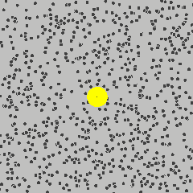
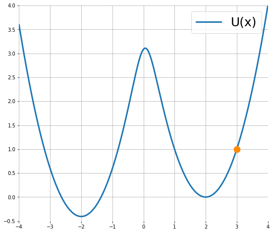
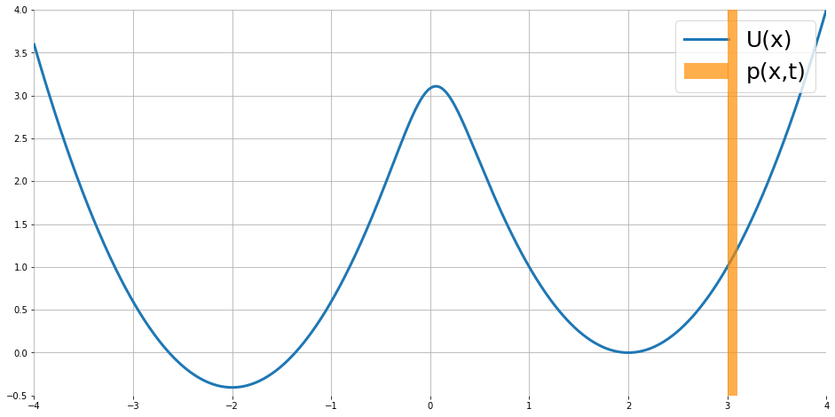
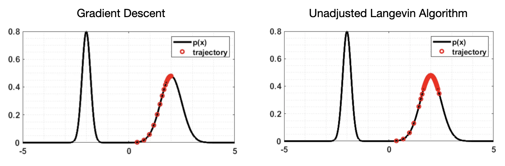

Langevin Dynamics
在 Score-Based Generative Models 一文中，我们用到了 Langevin dynamics 进行采样，但没有解释其原理。另外，在 Elucidated Diffusion Models 一文中，我们提到常用的扩散 SDE 和 PF ODE 其实可以推广为一个由 PF ODE 与 Langevin diffusion SDE 组合而成的广义 SDE. 由此可见，Langevin dynamics 在扩散模型的研究中有着举足轻重的地位，因此本文探究其背后的原理。
物理背景
Langevin dynamics 脱胎于经典的布朗运动模型：将花粉放入水杯之中，则花粉会因受到水分子的无规律撞击而做布朗运动，如图所示：

本节将通过分析该模型下的牛顿第二定律、功能关系与 Langevin 方程，推导出 Langevin diffusion SDE，最后借助 Fokker-Planck 方程找到该 SDE 的平稳分布，为下一节基于 Langevin dynamics 的采样方法做准备。
牛顿第二定律
设花粉的质量为 \(m\)，在 \(t\) 时刻位移为 \(\mathbf x=\mathbf x(t)\)，受到的瞬时合力为 \(\mathbf F=\mathbf F(\mathbf x(t),t)\)，则根据牛顿第二定律，有： \[ \mathbf F(\mathbf x,t)=m\frac{\mathrm d^2\mathbf x(t)}{\mathrm dt^2}\tag{1}\label{newton} \]
功能关系
根据动能定理，合外力对物体做的功等于物体动能变化量，因此在一个微小时间 \(\Delta t\) 内，有： \[ \langle\mathbf F(\mathbf x,t),\Delta\mathbf x\rangle=\Delta E(\mathbf x) \] 其中 \(\Delta\mathbf x\) 表示这一段时间内花粉的位移，\(E(\mathbf x)\) 表示花粉具有的动能。取 \(\Delta t\to 0\) 得： \[ \langle \mathbf F(\mathbf x,t),\mathrm d\mathbf x\rangle=\mathrm dE(\mathbf x)\implies \mathbf F(\mathbf x,t)=\nabla E(\mathbf x) \] 现在把整个水杯看作一个系统，则系统不受外力作用且只有保守力做功，因此整个系统机械能守恒，即： \[ E(\mathbf x)+U(\mathbf x)\equiv\text{const},\quad \forall\,\mathbf x \] 其中 \(U(\mathbf x)\) 表示系统的势能。这意味着 \(\nabla E(\mathbf x)+\nabla U(\mathbf x)\equiv 0\)，因此： \[ \mathbf F(\mathbf x,t)=\nabla E(\mathbf x)=-\nabla U(\mathbf x)\tag{2}\label{potential} \]
Langevin 方程
花粉的运动还可以用 Langevin 方程描述： \[ m\frac{\mathrm d^2\mathbf x(t)}{\mathrm dt^2}=-\gamma\frac{\mathrm d\mathbf x(t)}{\mathrm dt}+\boldsymbol\xi(t),\quad \boldsymbol\xi(t)\sim\mathcal N(\mathbf0,\sigma^2\mathbf I)\tag{3}\label{langevin} \] Langevin 方程将花粉受到的力分为两部分：
- \(-\gamma\frac{\mathrm d\mathbf x(t)}{\mathrm dt}\) 表示与速度大小正相关、方向相反的阻尼力，其中 \(\gamma\) 为阻尼系数，由 Stokes' Law 给出；
- \(\boldsymbol\xi(t)\) 表示粒子受周围水分子无规律撞击的随机涨落力，是一个零均值正态随机变量。
Langevin SDE
联立 \(\eqref{newton},\eqref{potential},\eqref{langevin}\) 式得： \[ \gamma\frac{\mathrm d\mathbf x(t)}{\mathrm dt}=\nabla U(\mathbf x)+\boldsymbol\xi(t) \]
为了将上式写作 SDE 的形式，引入标准维纳过程 \(\mathbf w(t)\) 代替 \(\boldsymbol\xi(t)\)，那么有 \(\frac{\mathrm d\mathbf w(t)}{\mathrm dt}=\frac{\boldsymbol\xi(t)}{\sigma}\)，代入得：
\[ \gamma\frac{\mathrm d\mathbf x(t)}{\mathrm dt}=\nabla U(\mathbf x)+\sigma\frac{\mathrm d\mathbf w(t)}{\mathrm dt}\implies \mathrm d\mathbf x=\frac{1}{\gamma}\nabla U(\mathbf x)\mathrm dt+\frac{\sigma}{\gamma}\mathrm d\mathbf w \] 注意到 \(\gamma\) 和 \(\sigma\) 都是常数，为了后续形式上的简洁，不妨抛开它们的实际物理意义，令 \(\gamma=-1,\,\sigma=\sqrt{2}\) 得： \[ \mathrm d\mathbf x=-\nabla U(\mathbf x)\mathrm dt+\sqrt{2}\mathrm d\mathbf w\tag{5}\label{diffsde} \] 其中随机项 \(\mathrm d\mathbf w\) 是零均值的，所以不必改变符号。称上式为 Langevin diffusion SDE. 下图模拟了单独一个粒子依 Langevin diffusion SDE 运动的动态：

SDE 的平稳分布
考虑一堆依 Langevin diffusion SDE 运动的粒子，初始时它们服从某种概率分布，那么随运动进行它们的概率分布也将随时间变化。我们感兴趣的是，当运动足够长时间后，粒子的概率分布将收敛到怎样的平稳分布。
设 \(p(\mathbf x,t)\) 表示 \(t\) 时刻 \(\mathbf x\) 处的概率密度， 则计算 \(\eqref{diffsde}\) 式的 Fokker-Planck 方程，有： \[ \frac{\partial}{\partial t}p(\mathbf x,t)=\nabla p(\mathbf x,t)^T\nabla U(\mathbf x)+p(\mathbf x,t)\Delta U(\mathbf x)+\Delta p(\mathbf x,t) \] Fokker-Planck 方程描述了概率分布随时间是如何变化的。为求解平稳分布（即 \(p(\mathbf x,t)\) 不随时间 \(t\) 变化），令上式为 0 得： \[ \nabla p(\mathbf x)^T\nabla U(\mathbf x)+p(\mathbf x)\Delta U(\mathbf x)+\Delta p(\mathbf x)=0 \] 可以验证，如下形式的玻尔兹曼分布是上式的解（事实上是唯一的解）： \[ \tilde p(\mathbf x)=\frac{1}{Z}\exp\left(-U(\mathbf x)\right)\tag{6}\label{stationary} \] 其中 \(Z\) 为归一化系数。下图模拟了大量粒子依 Langevin diffusion SDE 运动的动态，并可视化了概率分布的变化：

Langevin MCMC
假设我们希望从分布 \(p(\mathbf x)\) 中采样，根据上一节的理论，只需要找到合适的 \(U(\mathbf x)\)，使得平稳分布 \(\tilde p(\mathbf x)=p(\mathbf x)\)，那么按照 Langevin dynamics 的过程模拟即可。这一思想与 MCMC 是一致的。事实上，考虑到 SDE 就是连续时间、连续状态的马尔可夫过程，所以人们常将这类采样方法称作 Langevin MCMC.
ULA
令 \(\tilde p(\mathbf x)=p(\mathbf x)\)，代入 \(\eqref{stationary}\) 式得： \[ \tilde p(\mathbf x)=\frac{1}{Z}\exp(-U(\mathbf x))=p(\mathbf x)\implies U(\mathbf x)=-\log p(\mathbf x)-\log Z \] 因此我们要找的 \(U(\mathbf x)\) 就是 \(-\log p(\mathbf x)\) 差一个常数。两边求梯度： \[ \nabla U(\mathbf x)=-\nabla \log p(\mathbf x) \] 这就出现了熟悉的 score function. 代入 \(\eqref{diffsde}\) 式得： \[ \mathrm d\mathbf x=\nabla\log p(\mathbf x)\mathrm dt+\sqrt{2}\mathrm d\mathbf w\tag{6}\label{sde} \]
这就是用于采样的 Langevin diffusion SDE 形式。
实际操作时需要将 \(\eqref{sde}\) 式进行 Euler-Maruyama 离散化： \[ \mathbf x_{t+1}=\mathbf x_t+\tau\nabla\log p(\mathbf x_t)+\sqrt{2\tau}\boldsymbol\epsilon,\quad\boldsymbol\epsilon\sim\mathcal N(\mathbf0,\mathbf I)\tag{7}\label{ula} \] 其中 \(\tau\) 为离散化的步长。称该采样算法为 ULA (Unadjusted Langevin Algorithm).
联系梯度下降
注意到，如果 \(\eqref{ula}\) 式中没有随机项，那么 ULA 就变成了梯度下降（梯度上升）： \[ \mathbf x_{t+1}=\mathbf x_t+\tau\nabla\log p(\mathbf x_t) \] 其中梯度下降的“损失函数”就是负对数概率密度 \(-\log p(\mathbf x)\). 从这个角度看，ULA 可以直观理解为梯度下降+随机扰动：
- 梯度下降项使得采样点不断向 \(p(\mathbf x)\) 增大的方向移动，即向高密度区域聚集；
- 随机扰动项使得优化算法变成了采样算法——如果只有梯度下降项，那么数据点最终会收敛到 \(p(\mathbf x)\) 极大的地方，但采样应该允许取到 \(p(\mathbf x)\) 较小的区域，因此加入随机扰动项实现这一点。
下图展示了梯度下降与 ULA 的区别：

MALA
在 ULA 中，我们不假思索地直接将 \(\eqref{sde}\) 式离散化为了 \(\eqref{ula}\) 式，但离散化后我们真的能得到想要的分布吗？具体而言，离散化后的 Langevin dynamics 形成了离散时间的马尔可夫链，在合适的条件下，它是不可约正常返的，因此存在极限分布 \(p_\tau\) 且极限分布就是平稳分布。不过，由于离散误差，\(p_\tau\) 与我们想要的 \(p\) 之间存在一定的差异，一些理论工作正是研究不同步长 \(\tau\) 下 \(p_\tau\) 与 \(p\) 之间的差异。
为了改进 ULA 的误差，受到 Metropolis-Hastings 采样的启发，Roberts & Tweedie 提出了 Metropolis Adjusted Langevin Agorithm (MALA)：
提议 \(\mathbf y_{t+1}=\mathbf x_t+\tau\nabla\log p(\mathbf x_t)+\sqrt{2\tau}\boldsymbol\epsilon,\,\boldsymbol\epsilon\sim\mathcal N(\mathbf0,\mathbf I)\)；
计算接受率： \[ \alpha_\tau(\mathbf x,\mathbf y)=1\wedge\frac{p(\mathbf y)r_\tau(\mathbf y,\mathbf x)}{p(\mathbf x)r_\tau(\mathbf x,\mathbf y)},\quad r_\tau(\mathbf x,\mathbf y)\propto \exp\left(-\frac{\Vert\mathbf y-\mathbf x+\tau\nabla\log p(\mathbf x)\Vert^2}{4\tau}\right) \] 其中 \(\wedge\) 表示取最小值操作；
接受或拒绝提议。
当然，MALA 也可以用于改进对一般的基于势能 \(U(\mathbf x)\) 的 Langevin dynamics 的模拟。
References
- Paweł A. Pierzchlewicz. Langevin Monte Carlo: Sampling using Langevin Dynamics. https://perceptron.blog/langevin-dynamics/ ↩︎
- Chan, Stanley H. Tutorial on Diffusion Models for Imaging and Vision. arXiv preprint arXiv:2403.18103 (2024). ↩︎
- 朗之万动力学原理简介 - Openverse的文章 - 知乎. https://zhuanlan.zhihu.com/p/699598518 ↩︎
- Yuansi Chen. Lecture 3 – Langevin algorithms. https://metaphor.ethz.ch/x/2024/fs/401-4634-24L/lec/Lecture03.pdf ↩︎
- Kirill Neklyudov. Langevin Dynamics for sampling and global optimization. https://docs.google.com/presentation/d/1_yekoTv_CHRgz6vsT57RMDESHjlnbGQvq8tYCxKLyW0 ↩︎
- Alain Durmus, Eric Moulines. The Langevin MCMC: Theory and Methods. https://www.icts.res.in/sites/default/files/paap-2019-08-08-Eric%20Moulines.pdf ↩︎
- Roberts, Gareth O., and Richard L. Tweedie. Exponential convergence of Langevin distributions and their discrete approximations. Bernoulli (1996): 341-363. ↩︎